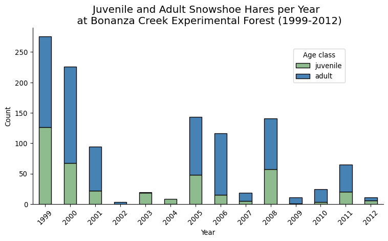

import os
import numpy as np
import pandas as pd
import matplotlib.pyplot as plt
from sklearn.linear_model import LinearRegressionLinear regression
In this lesson we will learn how to perform a simple linear regression by examining the counts, weight, and size measurements of juvenile snowshoe hares (Lepus americanus) observed at the Bonanza Creek Experimental Forest from 1999 to 2012 [1].
About the data
Size measurements, sex, and age of snowshoe hares were collected and made available by Dr. Knut Kielland and colleagues at the Bonanza Creek Experimental Forest Long Term Ecological Research (LTER) site located approximately 20 km southwest of Fairbanks, Alaska, USA. The data contains observations of 3380 snowshoe hares obtained by capture-recapture studies conducted yearly from 1999 to 2012 in three sampling sites: Bonanza Riparian, Bonanza Mature and Bonanza Black Spruce.

Data exploration
Let’s start by loading the data and taking a very high-level look at it:
hares= pd.read_csv(os.path.join('data','knb-lter-bnz','55_Hare_Data_2012.txt'))
hares.head()| date | time | grid | trap | l_ear | r_ear | sex | age | weight | hindft | notes | b_key | session_id | study | |
|---|---|---|---|---|---|---|---|---|---|---|---|---|---|---|
| 0 | 11/26/1998 | NaN | bonrip | 1A | 414D096A08 | NaN | NaN | NaN | 1370.0 | 160.0 | NaN | 917.0 | 51 | Population |
| 1 | 11/26/1998 | NaN | bonrip | 2C | 414D320671 | NaN | M | NaN | 1430.0 | NaN | NaN | 936.0 | 51 | Population |
| 2 | 11/26/1998 | NaN | bonrip | 2D | 414D103E3A | NaN | M | NaN | 1430.0 | NaN | NaN | 921.0 | 51 | Population |
| 3 | 11/26/1998 | NaN | bonrip | 2E | 414D262D43 | NaN | NaN | NaN | 1490.0 | 135.0 | NaN | 931.0 | 51 | Population |
| 4 | 11/26/1998 | NaN | bonrip | 3B | 414D2B4B58 | NaN | NaN | NaN | 1710.0 | 150.0 | NaN | 933.0 | 51 | Population |
hares.info()<class 'pandas.core.frame.DataFrame'>
RangeIndex: 3380 entries, 0 to 3379
Data columns (total 14 columns):
# Column Non-Null Count Dtype
--- ------ -------------- -----
0 date 3380 non-null object
1 time 264 non-null object
2 grid 3380 non-null object
3 trap 3368 non-null object
4 l_ear 3332 non-null object
5 r_ear 3211 non-null object
6 sex 3028 non-null object
7 age 1269 non-null object
8 weight 2845 non-null float64
9 hindft 1633 non-null float64
10 notes 243 non-null object
11 b_key 3333 non-null float64
12 session_id 3380 non-null int64
13 study 3217 non-null object
dtypes: float64(3), int64(1), object(10)
memory usage: 369.8+ KBWe can see from the info() display that most of these variables are of type object (most likely strings) and some continuous and categorical numerical variables. To facilitate our data wrangling we convert the date column to a datetime type:
hares['date'] = pd.to_datetime(hares['date'])
print(hares.date.dtype)datetime64[ns]Examining hares age data
From the data’s info() display we can see that the age column has 1269 non-NA rows. In this example we are interested in working with data from juvenile hares exclusively. So we will:
- Examine the values in the
agecolumn - Filter for observations in which age is ‘adult’ or ‘juvenile’
- Investigate the age distributions across time
From the dataset’s metadata we know there are three allowedd values in the age column:
- ‘a’ for ‘adult’,
- ‘j’ for ‘juvenile’, and
- ‘m’ for ‘mortality’.
Let’s see the data in this column:
# Examine unique values and counts in age column
pd.DataFrame(hares['age'].value_counts(dropna=False))| count | |
|---|---|
| age | |
| NaN | 2111 |
| A | 564 |
| J | 267 |
| a | 183 |
| j | 128 |
| 1/2/2013 | 21 |
| 1/4/2013 | 21 |
| 3/4/2013 | 18 |
| 1 | 12 |
| U | 11 |
| ? | 10 |
| a 3/4 yr. | 4 |
| 2 yrs. | 3 |
| u | 3 |
| A 3/4 | 2 |
| 1.5 | 2 |
| 3.5 yrs. | 2 |
| 2.25 yrs | 2 |
| 1 yr. | 2 |
| 1 yr | 2 |
| a 1 yr. | 2 |
| A 1.5 | 1 |
| 2.5 yrs | 1 |
| 3 yrs. | 1 |
| a 2 yrs. | 1 |
| J 3/4 | 1 |
| 2 yrs | 1 |
| A 1/2 | 1 |
| a 1 yr | 1 |
| 1.25 | 1 |
| 3.25 yrs. | 1 |
This is the time to make a decision: since the metadata states that ‘a’ indicates adult and ‘j’ indicates juvenile, we will only keep observations that have ‘a’ or ‘j’ (either capitalized or not) as part of the age value.
# Update age values to juvenile and adult for observations where 'a' and 'j' are included
hares.loc[hares.age.str.contains('j', case=False, na=False), 'age'] = 'juvenile'
hares.loc[hares.age.str.contains('a', case=False, na=False), 'age'] = 'adult'
# Filter for confirmed observations of juvenile and adult hares
hares_juv_adult = hares[hares.age.isin(['juvenile', 'adult'])].copy()
print(f"Number of selected juvenile and adult hares: {len(hares_juv_adult)}")Number of selected juvenile and adult hares: 1155To better understand our data we examine the distribution of hare age across years. Let’s wrangle our data a bit to get there:
# Extract year in which each observation happened
hares_juv_adult['year'] = hares_juv_adult.date.dt.year
# Create hares/year dataframe
hares_per_year = (hares_juv_adult.groupby(['year','age']).size() # Note: size() counts all elements, including NAs
.reset_index(name='counts') # Remove multi-index
.pivot(index='year', columns='age', values='counts') # Pivot into long format
)
hares_per_year| age | adult | juvenile |
|---|---|---|
| year | ||
| 1999 | 150.0 | 126.0 |
| 2000 | 159.0 | 67.0 |
| 2001 | 72.0 | 22.0 |
| 2002 | 3.0 | NaN |
| 2003 | 1.0 | 18.0 |
| 2004 | NaN | 8.0 |
| 2005 | 95.0 | 48.0 |
| 2006 | 101.0 | 15.0 |
| 2007 | 13.0 | 5.0 |
| 2008 | 84.0 | 57.0 |
| 2009 | 10.0 | 1.0 |
| 2010 | 21.0 | 3.0 |
| 2011 | 45.0 | 20.0 |
| 2012 | 5.0 | 6.0 |
If you are wondering, here year is the name of the dataframe’s row index and age is the name of the column index. In this format it is easy to create a stacked bar plot to examine the occurrence of juvenile and adult hares:
Code
# Create figure + axes
fig, ax = plt.subplots(figsize=(8, 5))
hares_per_year[['juvenile', 'adult']].plot( # Rearrange columns for stacking order
kind='bar',
stacked=True,
ax=ax,
edgecolor='black',
color=["#8FBC8F", "#4682B4"],
)
# Labels, title, and legend
ax.set_xlabel("Year")
ax.set_ylabel("Count")
ax.set_title("Juvenile and Adult Snowshoe Hares per Year \n at Bonanza Creek Experimental Forest (1999-2012)",
{'fontsize':15})
ax.legend(title="Age class",
loc="upper right",
bbox_to_anchor=(0.9, 0.9))
# Axes and ticks
ax.spines['top'].set_visible(False)
ax.spines['right'].set_visible(False)
plt.xticks(rotation=45)
plt.tight_layout()
plt.show()
No observations of juvenile snowshoe hares were made during 2002, while the highest count was registered in 1999 (the first year of the study) with 126 observations. In the previous plot we can see a diminishing trend in the number of juvenile hare trappings. The two exceptions are 2005, 2008, and 2011.
Exercise
Consider the following question: In what ways could the data collection methods affect the results we see here?
Linear regression
For our analysis we want to investigate possible relations between hind foot length and weight for juvenile hares. Let’s take a look at our target data:
# Subset juvenile hares with hind foot and weight measurements
juveniles_weight_hindft = hares_juv_adult[(hares_juv_adult['hindft'].notna()) &
(hares_juv_adult['weight'].notna()) &
(hares_juv_adult['age']=='juvenile')]
print(f"Number of juvenile hares with hind foot and weight measurements: {len(juveniles_weight_hindft)}")
juveniles_weight_hindft.plot.scatter(x='hindft', y='weight', alpha=0.5)Number of juvenile hares with hind foot and weight measurements: 265
We can see there seems to be a linear trend between the weight and hind foout length variables, though as the hind foot length increases the variability does too.
Let’s investigate whether a linear model is an adequate way to describe this data. To do this we will use the LinearRegression model from the scikit-learn library. If you need a refresher about how a linear regression works, click here for a a great resource.
The trickiest part of fiting the model is to get the data in the required shape. From the LinearRegression documentation we see that:
- input data (the x-values, independent variable, or training data) shape should be
(n_samples, 1). The 1 comes from having a single feature modeling the output data. - output data (the y-values, dependent variable, or target data) shape should be
(n_samples,).
Let’s select and reshape the input and output data accordingly:
# x-values
X = np.array(juveniles_weight_hindft['hindft']).reshape((-1, 1)) # Reshape to (n_samples, 1)
print(f"Input data shape: {X.shape}")
# y-values
y = np.array(juveniles_weight_hindft['weight']) # Shape is (n_samples,)
print(f"Output data shape: {y.shape}")Input data shape: (265, 1)
Output data shape: (265,)Next, we create a LinearRegression instance and fit it to our data to create a model. From the model we extract the coefficient of determination or \(R^2\), and the x-axis intercept and slope from our linear model.
# Fit model
model = LinearRegression().fit(X, y)
# Calculate R^2
R_sq = model.score(X, y)
print(f"Coefficient of determination (R^2): {R_sq}")
# Retrieve intercept and slope
intercept = model.intercept_
print(f"x-axis intercept: {intercept}")
slope = model.coef_[0]
print(f"Slope: {slope}")Coefficient of determination (R^2): 0.3871164783665736
x-axis intercept: -352.77198564640594
Slope: 10.092239638623006Remember that the equation of the linear model is given by
\[\hat{y} = \beta_0 + \beta_1 x, \]
where
- \(x\) = input variable
- \(\hat{y}\) = estimated \(y\) value at \(x\) from the linear model
- \(\beta_0\) = the \(x\)-intercept of the linear model, this is interpreted as the estimated average value when \(x=0\)
- \(\beta_1\) = the slope of the linear model, this is the estimated difference in the predicted value \(\hat{y}\) per unit of \(x\).
The coefficient of determination, \(R^2\) is between 0 and 1, with \(R^2=1\) describing a perfect fit of the model to the data. The \(R^2\) value is interpreted as the amount of variation in the outcome variable \(y\) that is explained by the least squares line the variable \(x\).
We can use all this information to plot our linear model together with our data:
Code
fig, ax = plt.subplots(figsize=(8,6))
ax.scatter(x=juveniles_weight_hindft['hindft'],
y=juveniles_weight_hindft['weight'],
alpha=0.5,
color='#8FBC8F')
# Define parameters of the regression line
x_start = juveniles_weight_hindft['hindft'].min()
x_end = juveniles_weight_hindft['hindft'].max()
# Plot the line
ax.plot([x_start, x_end],
[slope*x_start + intercept, slope*x_end + intercept],
color="darkred",
lw=2,
linestyle="--")
# Add the parameters
beta0 = r'$intercept = \hat\beta_0 =$'+ str(round(intercept,2))
ax.text(80, 1300, beta0, fontsize=10, horizontalalignment='center')
beta1 = r'$slope = \hat\beta_1 =$' + str(round(slope,2))
ax.text(80, 1200, beta1, fontsize=10, horizontalalignment='center')
r_squared = r'$R^2 =$' + str(round(R_sq,2))
ax.text(80, 1100, r_squared, fontsize=10, horizontalalignment='center')
# Add a title and axis label
ax.set_title('Relationship between hind foot length and weight of \n juvenile snowshoe hares at Bonanza Creek Experimental Forest',
{'fontsize':15})
ax.set_xlabel('Hind foot length (mm)')
ax.set_ylabel('Weight (g)')
# Show the plot
plt.show()
Exercise
Answer the following questions:
Does it make sense to interpret the \(x\)-axis intercept as an estimated measurement of weight?
What is the estimated change in weight for each millimiter increase in hind foot length?
Does a linear model of weight with respect to hind foot length account completely for the change in the dependent variable? What other variables could be worth exploring to model the weight?
How would you use the linear model to estimate the weight of a juvenile hare with hind foot length of 90 mm?
References
[1]
K. Kielland, F. S. Chapin, R. W. Ruess, and Bonanza Creek LTER, “Snowshoe hare physical data in Bonanza Creek Experimental Forest: 1999-Present.” Environmental Data Initiative, 2017. doi: 10.6073/PASTA/03DCE4856D79B91557D8E6CE2CBCDC14. Available: https://portal.edirepository.org/nis/mapbrowse?packageid=knb-lter-bnz.55.22. [Accessed: Oct. 12, 2024]